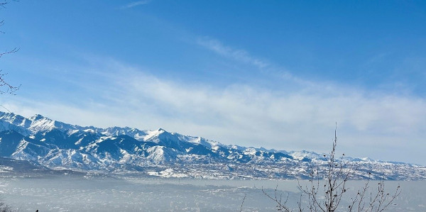
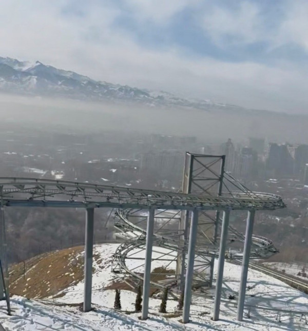
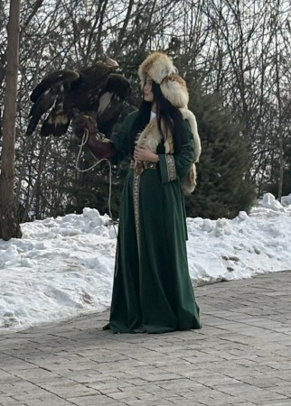
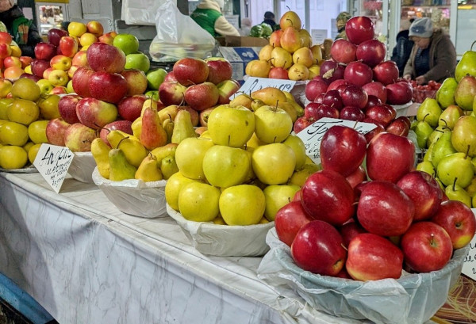
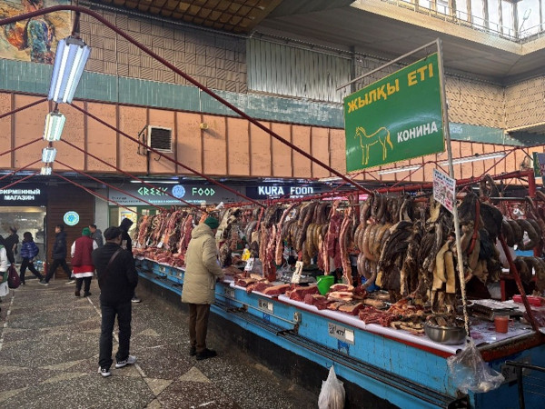
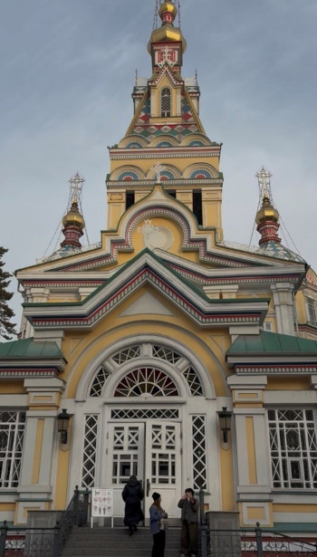
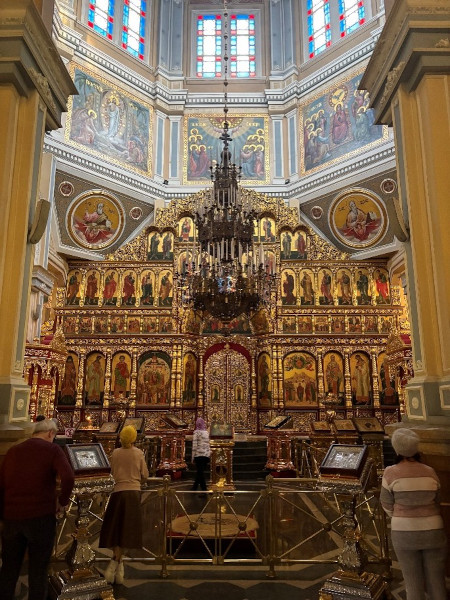
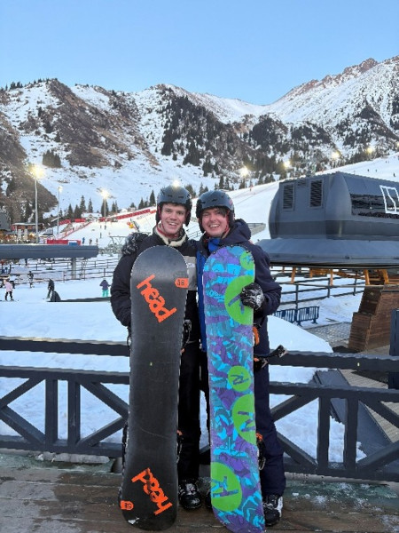
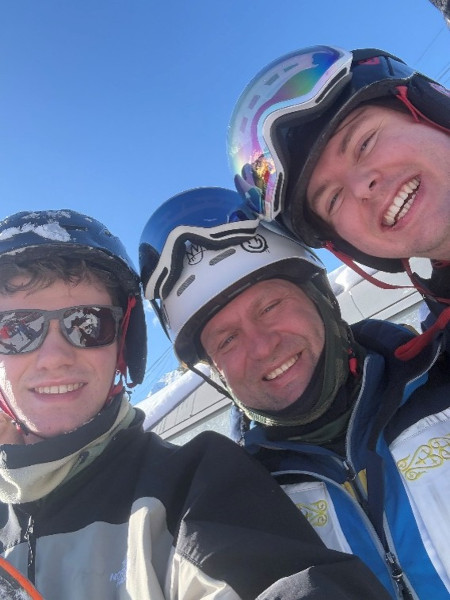
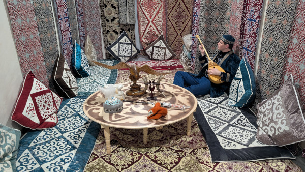

Guest Post
As an epilogue we have a guest blog written by Eamonn, describing Patrick and Eamonn's extra week in Kazakhstan. As its 7 pages long its on this separate page, you can return to main blog here:
Matthew Smith's Personal Webpage
As an epilogue we have a guest blog written by Eamonn, describing Patrick and Eamonn's extra week in Kazakhstan. As its 7 pages long its on this separate page, you can return to main blog here:
It was Saturday morning, and we had said our goodbyes to the senior academic team the evening before. They were bound back to a comparatively warmer Cardiff, but Patrick and I were not. We still had another week of tutoring to deliver. Saturday began early with a 4am alarm, justified by a 7am flight. We were off to Almaty. Nestled at the foot of the Trans-Ili Alatau, which is part of the Tian Shan range that forms much of Kazakhstan's natural border with Kyrgyzstan, Almaty is a city steeped in history. Regarded as the ancestral home of the apple, the name itself derives from alma, the Kazakh word for apple, it served as Kazakhstan's capital until 1997. Its urban sprawl contrasted nicely with Astana's planned modernity. A two-hour flight saw land just after 9am - useful, given the ambitious itinerary we had assembled less than a week earlier. The climate in Almaty was immediately more forgiving for a winter traveller; a balmy high of 10C almost had us regretting not packing shorts. Our first stop was Kok Tobe, an amusement park perched on a 1,100-metre hill in the South-East of the city. We thought an amusement park would raise our spirits and was feeling glum without having our best friend and mentor Matt with us (Editor's note: OK, I may have added that last sentence). It offers a panoramic view of Almaty and the Tian Shan mountains and, much to our excitement, a roller-coaster.

The Tian Shan mountains, as seen from Kok Tobe.We took what seems to be Almaty's preferred mode of transport, a cable car, up to the peak. The ride lasted about 15 minutes and rising above the city we were greeted by an impressive alpine view. Kok Tobe is unmistakably touristy. There was the option to dress in traditional Kazakh clothing and pose for a photo with a live eagle, alongside coffee shops, restaurants and souvenir stalls. The shopkeepers seemed particularly interested in us, perhaps assuming we had deep pockets, but our focus remained fixed on the roller-coaster.

The roller-coaster at Kok Tobe.
Opportunity for a photo with an eagle.The roller-coaster was worth it. It's not exactly Alton Towers, but geography does most of the heavy lifting. Dropping through a tight spiral with snow-dusted peaks rising in every direction made for a memorable ride.
With the roller-coaster ticked off, we descended on the sky gondola and made our way along Abay Street towards the Green Bazaar, the oldest in Almaty. Along the way we spotted a “British” pub and felt obliged to stop in Matt's honour, given he had spent much of the trip searching for one. The beer selection would not have looked out of place in any UK boozer. Unfortunately, neither would the prices. Still, a pint of Guinness felt appropriate before continuing to the bazaar.
The Green Bazaar spans two floors of connected halls, each section selling something entirely different from the last. Sportswear gives way to kitchen appliances, appliances to children's toys, toys to dried fruits and spices, and so on. It happened to be my mother's birthday, and I was determined to leave with a Kazakh woollen or silk scarf as a present.
We found a stall run by a friendly but sharp businesswoman who persuaded me to leave with two woollen shawls and a chiffon scarf for good measure. After trying my hand at bartering, I was able to negotiate the price down from 32,500 to 30,000 Tenge. A price I was later told was on the steeper but fair side of the market. The gifts were well received though, justifying the effort.
Wandering a little longer through the bazaar, we reached the central food hall. Apples large enough to justify Almaty's reputation were stacked in neat piles, and an entire aisle was devoted to different cuts of horse meat. By then we were hungry but not confident enough to haggle for lunch, so we did what many culturally curious travellers eventually do... We went to KFC.

The plentiful giant apples available in the market.
The meat section of the market.After sampling Kazakh Kentucky Fried Chicken, we made our way to the Ascension Cathedral in Panfilov Park. Built in 1907 entirely from wood and without nails, the cathedral rises in bright yellow tiers beneath five spires. Inside, the atmosphere shifts. Gold altars and iconography line the walls, and worshippers move quietly through acts of veneration, bowing, praying and pressing their lips gently to painted saints. We kept our visit brief out of respect for the service taking place, but the experience left an impression.

The Ascension Cathedral in Panfilov Park.
Inside the Ascension Cathedral in Panfilov Park.From Panfilov Park we ordered a Yandex to the Medeu base station and boarded our third cable car of the day, arriving in Shymbulak just after 7pm. Hostel Shymbulak cost a respectable £20 for the night. The rooms were rustic, and the attendant a man of few words. It was Patrick's first hostel experience, and I had done little to reassure him beforehand, recounting some of the more colourful stories I knew, but our stay went entirely undisturbed.
After dinner in a mountain restaurant, we settled in early. Snowboarding awaited in the morning. Shymbulak is not gentle. Wide slopes, vast mountains and thinner air than we were used to proved slightly daunting for both of us. We rose early on Sunday, determined to ease ourselves into the mountain with a lesson. Our instructor, Yevgeny, was technically precise and occasionally philosophical. Midway through the lesson, while we were concentrating on remaining upright, he asked whether we believed in God. It is a question that invites serious contemplation. Unfortunately, at that moment I was preoccupied with gravity.

Patrick and Eamonn on the slopes of Shymbulak.
Patrick and Eamonn with their snow boarding instructor.The lesson was a success. Patrick, who had never snowboarded before, took to it naturally. By the end of the day, he had mastered the falling leaf and was beginning to link turns with confidence. I, meanwhile, had set my sights on something more ambitious. Having snowboarded only three times previously, I decided to attempt my first red run: the Talgar Pass descent, a drop of roughly one kilometre from near the summit... I made it down. Twice.
We both left Shymbulak intact, although Patrick's rented goggles were not so fortunate. As seasoned snowboarders such as ourselves know, the mountain gives and the mountain takes. On this occasion, it took a pair of goggles and £15.
By the time a taxi carried us back to Almaty, we had exhausted our appetite for cable cars. Our £50 hotel room felt luxurious after mountain living. The staff were warm and seemed excited to welcome guests from Cardiff. In conversation, we tried to confirm our evening plans to visit Republic Square with the staff who responded with “Why? It's just a square.” Taking this efficient review on board, we opted for a meal at a local restaurant and turned in early once again.
Monday morning brought an early flight back to Astana. Inventory of the Scientific Thinking equipment awaited us, along with research presentations for staff and students at CUK. The talks were well received and the questions ranged widely: superconductivity, semiconductors, PhD life, reflective statements, even what we thought of the Kazakh students. It felt like a proper closing moment rather than an abrupt ending.
There was, however, still a working week to complete.
Much of it involved restoring order to the 66 experiment boxes issued to students. I will keep my comments on the tidiness of said boxes brief. Let us simply say that lab organisation was not the most enduring legacy of the fortnight. By Friday afternoon, Patrick and I had returned them to something approaching order.
And so that brings this account to a close.

Eamonn immersing himself in the local culture.{kind=link}
{kind=link}
{kind=link}
{kind=link}
{kind=link}
{kind=link}
{kind=link}
{kind=link}
{kind=link}
{kind=link}